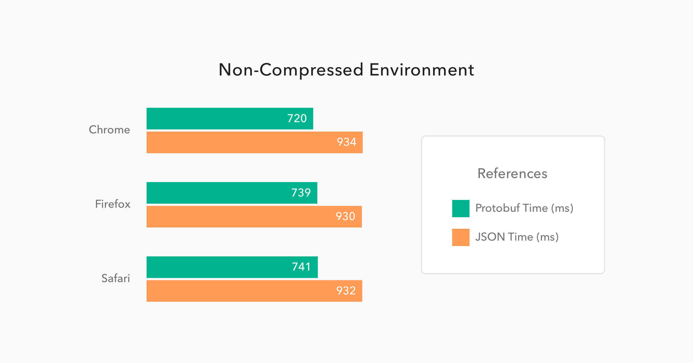
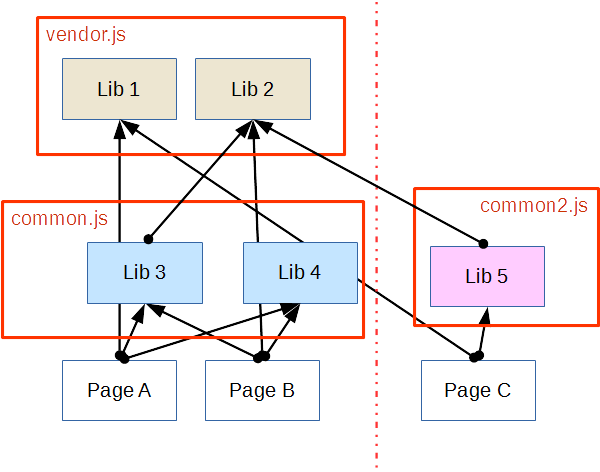
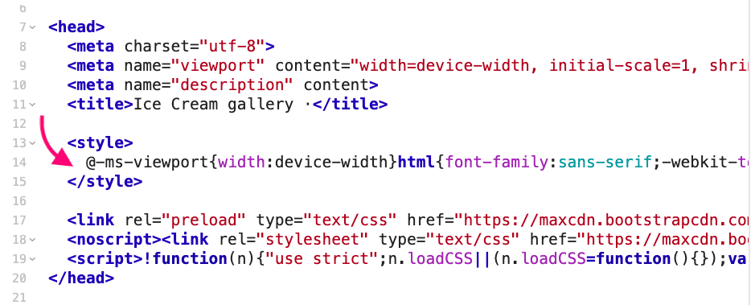
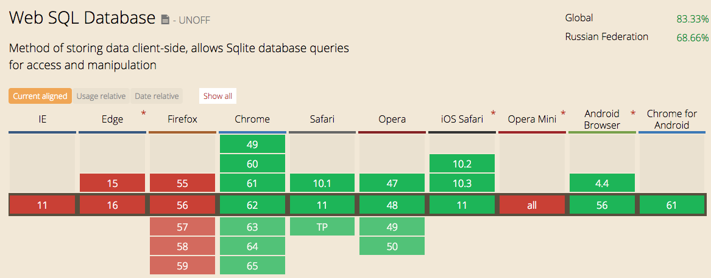
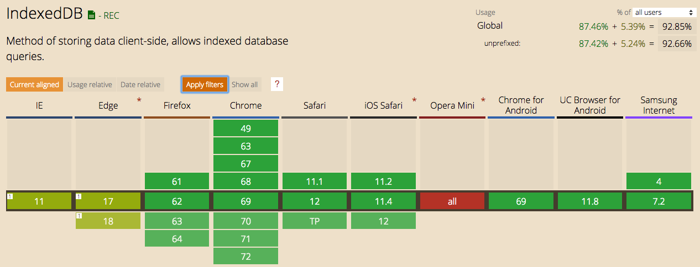
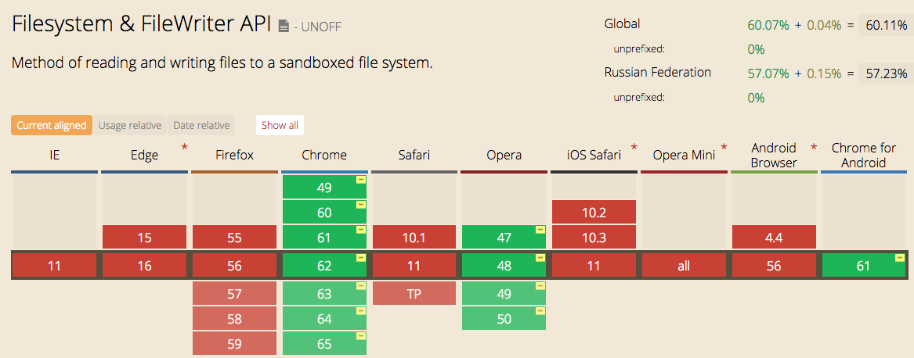
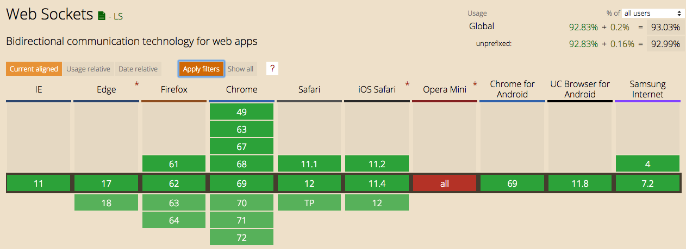
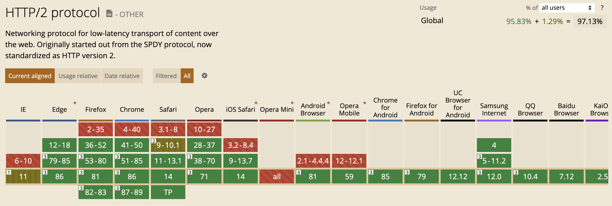

HTTP weakness.
One request per connection
HTTP1.1 заголовок Connection: keep-alive
позволит переиспользовать соединение после запроса
При получении Connection: close браузер закроет соединение
HTTP weakness.
Max. 6 connections per domain

Как с этим жить:
- Domain-шардинг
(static.myawesomegame.io)
- Конкатенация скриптов, стилей
- Спрайты
- Инлайн данных,
base64 картинок/шрифтов,
critical css, critical js
Грузите только нужное

Грузите только нужное

Кэширование
Кэширование — повторное использование ресурсов для работы приложения.
Использование кэшей позволяет уменьшить задержку и расходование сетевого трафика и тем самым уменьшить
время, необходимое для отображения ресурса. HTTP-кэширование — кэширование ответов на
HTTP-запросы
Кэширование
// Запрос обыкновенный
GET /script.js HTTP/1.1
Host: example.com
Accept: */*
Кэширование
// Ответ на запрос
HTTP/1.1 200 OK
Content-Type: application/javascript; charset=UTF-8
Cache-Control: public, max-age=86400
Last-Modified: Sat, 25 Mar 2017 12:00:00 GMT
ETag: W/"7349b-15b075b6d60"
Cache-Control
Возможные значения
no-cacheno-storemust-revalidateprivate/publicmax-age=31536000
Проверка "свежести"
// Ответ на запрос
HTTP/1.1 200 OK
...
Last-Modified: Sat, 25 Mar 2017 12:00:00 GMT
...
Проверка "свежести"
GET /script.js HTTP/1.1
Host: example.com
If-Modified-Since: Sat, 25 Mar 2017 12:00:00 GMT
HTTP/1.1 304 Not Modified // Контент не изменился
HTTP/1.1 200 OK // Новый контент
Проверка
валидности
// Ответ на запрос
HTTP/1.1 200 OK
...
ETag: W/"7349b-15b075b6d60"
...
Проверка
валидности
GET /script.js HTTP/1.1
Host: example.com
If-None-Match: W/"7349b-15b075b6d60"
HTTP/1.1 304 Not Modified // Контент не изменился
HTTP/1.1 200 OK // Новый контент
"Управление" кэшированием
- Гет-параметр:
GET /script.js?_=1492172324776
- Уникальные имена:
GET /bundle.026f8e459c8f89ef75fa7a78265a0025.js
Хранение данных на клиенте
Как сохранить что-то в браузере
пользователя?
Все данные, которые используются web-приложением, существуют только пока открыта вкладка
браузера. Однако, существуют способы сохранить какие-то данные в браузере и воспользоваться ими потом:
- Кэш браузера — сохраняет только ответы на запросы, сложно управлять
- cookies — исторически первый способ сохранения информации между сессиями работы с сайтом,
но имеют слишком маленький размер
- Web Storage API — механизм для сохранения key/value значений с возможностью программного
управления данными
- WebSQL/IndexedDB — базы данных в браузере
- FileSystem API — интерфейс для работы с файловой системой
Web Storage API
Web Storage API — механизм для сохранения key/value значений с возможностью программного
управления данными. Предоставляет два host объекта в браузере пользователя с возможностью персистентного
сохранения данных (до 10 MB на origin)
window.sessionStorage — сохраняет данные пока открыт браузерwindow.localStorage — сохраняет данные навсегда, пока пользователь вручную не очистит
хранилище данных в настройках браузера
window.localStorage
// элементами Storage являются строки
localStorage[key]; /* String */
localStorage[key] = value; /* String */
// работа с объектами Storage синхронная
localStorage.length
localStorage.key(i) /* String */
localStorage.getItem(key) /* String */
localStorage.setItem(key, value) // может сгенерировать exception,
// если нет места
localStorage.removeItem(key)
localStorage.clear()
JSON
Можно написать обёртку, которая позволит сохранять в Storage простые объекты:
function setJSON(key, value) {
localStorage[key] = JSON.stringify(value);
}
function getJSON(key) {
const value = localStorage[key];
return value ? JSON.parse(value) : null;
}
Событие storage
Событие storage происходит при любых изменениях в Storage в других вкладках с того же
origin. То есть это событие позволяет общаться между вкладками
// обработчик добавляется на объект window
window.addEventListener('storage', function (e) {
/* e.key, e.newValue */
...
});
WebSQL — полноценная SQL база данных, которая позволяет персистентно хранить
данные в браузере пользователя и работать с ними посредством SQL-запросов. Максимальный размер
сохраняемых данных — 5 MB. Поддержка на
caniuse.

WebSQL пример
// создаём объект базы данных (доступно и в воркерах!)
const db = openDatabase('forum', 'v1.0.0', 'Forum', 100000);
// создаём транзакцию
db.transaction(function(tx) {
tx.executeSql(
'SELECT COUNT(*) FROM `forum`',
[],
function (result) { console.log(result) },
function (tx, error) { /* some error logic */ }
);
});
IndexedDB — низкоуровневое API для клиентского хранилища большого объема структурированных данных, включая
файлы/blobs. Эти API используют индексы для обеспечения высоко-производительного поиска данных. Максимальный
размер сохраняемых данных — 50 MB!!! Поддержка
на caniuse.

IndexedDB пример
// открываем базу данных Forum (доступно и в воркерах!)
const request = window.indexedDB.open('Forum', 3); // 3 - версия бд
// обработчик успешного открытия базы данных
request.onsuccess = function(event) {
const db = event.target.result;
const store = db.createObjectStore('users', { keyPath: 'userId' });
store.createIndex('age', 'age', { unique: false });
store.createIndex('email', 'email', { unique: true });
store.add({ age: 21, email: 'a.ostapenko@corp.mail.ru' });
};
deprecated =(((
С помощью FileSystem API и File API веб приложение может создавать, читать, просматривать и записывать файлы
находящиеся в области пользовательской «песочницы». Крутой туториал. Поддержка на caniuse.

WebSocket
Протокол WebSocket — протокол полнодуплексной связи (может
передавать и принимать одновременно) поверх TCP-соединения, предназначенный для обмена сообщениями
между браузером и веб-сервером в режиме реального времени. С помощью его API вы можете отправить
сообщение на сервер и получить ответ без выполнения отдельного HTTP-запроса, причем этот процесс будет
событийно-управляемым
Были созданы, чтобы обойти ограничение HTTP на формат запрос/ответ и дать возможность отправлять
сообщения с сервера на клиент
Подробнее — по ссылке на
learn.javascript.ru
Поддержка браузерами — caniuse

Преимущества WebSocket
- Поддерживает возможность отправки сообщений с сервера на клиент
- Все сообщения проходят через одно TCP-соединение, поэтому отсутствует overhead на открытие соединения
- Очень хорошая поддержка браузерами и очень простой API использования
Именно поэтому WebSocket'ы очень удобно использовать для написания:
- Реалтаймовых игр (для обмена сообщениями между клиентом и сервером)
- Чатов и веб-мессенджеров
- PUSH-уведомления и прочие нотификации от сервера
Создание WebSocket
const ws = new WebSocket('ws://example.com/ws');
// если страница загружена по https://
const ws = new WebSocket('wss://example.com/ws');
// События WebSocket
ws.addEventListener('open', listener); // соединение установлено
ws.addEventListener('message', listener); // пришло новое сообщение
ws.addEventListener('error', listener); // ошибка
ws.addEventListener('close', listener); // сокет закрылся
Работа с WebSocket
После создания объекта WebSocket необходимо дождаться, пока соединение не откроется и не
установится:
ws.onopen = function() {
console.log('Соединение установлено, можно отправлять сообщения!');
// Отправка текста
ws.send('Hello!');
ws.send(JSON.stringify({ x: 100, y: 150 }));
// Отправка бинарных данных (например файлы из формы)
ws.send(form.elements[0].file);
};
Событие error и close
ws.onerror = function(error) {
// произошла ошибка в отправке/приёме данных или сетевая ошибка
console.log('Ошибка ' + error.message);
};
ws.onclose = function(event) {
// 1000 - штатное закрытие сокета (коды WebSocket из 4х цифр)
// 1001 - удалённая сторона исчезла
// 1002 - ошибка протокола
// 1003 - неверный запрос
console.log('Код: ' + event.code);
console.log('Причина: ' + event.reason);
};
Событие message — обработка
сообщений с сервера
ws.onmessage = function(event) {
const data = event.data;
const message = JSON.parse(data);
console.log('Прислали сообщение: ' + message.text);
// или, если есть глобальная шина событий
bus.emit(message.event, message.payload);
};
А ещё можно слать и принимать бинарные данные
var buffer = new ArrayBuffer(128);
socket.send(buffer);
var intview = new Uint32Array(buffer);
socket.send(intview);
var blob = new Blob([buffer]);
socket.send(blob);
Как использовать WebSocket
- Договориться о своём "надпротоколе" обмена сообщениями между клиентом и сервером — зафиксировать форматы
всех сообщений в приложении. Например:
{
"action": "FIRE",
"payload": { "cell": "b4" }
}
{
"action": "FIRE_RESULT",
"payload": { "state": "Убил" }
}
Как использовать WebSocket
- Написать обёртку вокруг WebSocket, которая будет внутри себя заниматься отправкой и приёмом
сообщений, а наружу будет предоставлять удобный интерфейс:
const webSocketService = new WebSocketService('/ws');
webSocketService.send('FIRE', { "cell": "b4" });
webSocketService.subscribe('FIRE_RESULT', function (payload) {
const state = payload.state;
game.reRender(state);
});
Service Workers
Service Workers — продвинутая технология, которая позволяет
получить полный контроль над жизненным циклом приложения. Сервис воркер — это воркер, который:
- работает в выделенном контексте и отдельном потоке
- имеет доступ к Cache Storage (расширенное хранилище данных)
- имеет возможность перехватывать HTTP-запросы, отправляемые страницей
- а так же может работать даже если само web-приложение или даже браузер не запущены
Подробнее — по ссылке на MDN
Service Workers используются
- Кэширование данных (до 50% диска)
- Оффлайн-работа приложения (прям вообще без Интернета чтобы было!)
- Фоновая синхронизация данных
- Ответ на запросы от других источников ("проксирование" запросов)
- Улучшение производительности
- Push-нотификации
- Распараллеливание вычислений
- etc...
Service Workers
Работает в специальном скоупе ServiceWorkerGlobalScope, который не имеет
доступа к обычному скоупу с window
Имеет несколько событий, на которые можно навешивать
обработчики:
this.addEventListener('install', listener); // SW зарегистрировали
this.addEventListener('activate', listener); // SW запустили
this.addEventListener('fetch', listener); // SW перехватил запрос
this.addEventListener('message', listener); // SW получил сообщение
this.addEventListener('push', listener); // SW получил push
Установка Service Worker'а
navigator.serviceWorker.register('/sw.js', { scope: '/' })
.then(function(registration) {
// Registration was successful
console.log('SW registration OK:', registration);
})
.catch(function(err) {
// registration failed :(
console.log('SW registration FAIL:', err);
});
});
Service Worker — это просто файл
this.addEventListener('install', function (event) {
console.log('Service worker установлен')
event.waitUntil(
// находим Cache-объект с нашим именем
caches.open('MY_CACHE')
.then(function (cache) {
// загружаем в наш cache необходимые файлы
return cache.addAll(['/index.html']);
});
);
});
Практика с Service Workers
Ещё
примеры использования Service Workers
Основные недостатки HTTP/1.1
HTTP/1.1 был спроектирован для сетей с более низкими пропускными способностями (bandwidth) и более высокими
задержками (latency), чем сейчас. Поэтому у него есть недостатки:
- Ровно один параллельный запрос на соединение
- Ограничение в 6 параллельных запросов на домен
- Запросы инициируются исключительно клиентом
- Излишние и несжимаемые заголовки запроса и ответа
- Опциональное сжатие данных
- HTTP очень медленный, но HTTPS ещё медленнее
HTTP/2
HTTP/2 создавался с целью улучшить скорость работы web-приложений, за счёт уменьшения сетевых задержек и более
удобного управления ресурсами в web. Основные особенности:
- Более быстрый старт соединения и улучшенное сжатие данных
- Неограниченное количество запросов на соединение: на домен открывается единственное соединение,
через которое отправляются все запросы
- Возможность приоритезации и форсированной загрузки ресурсов
- Как следствие, 64% уменьшение времени загрузки на неоптимизированных страницах (на
мобильных устройствах доходит до 23%)
- Обратно-совместим с HTTP/1.1, требует для работы HTTPS
HTTP/2 требует наличие
поддержки на сервере и на клиенте
Сервера, которые поддерживают HTTP/2:
- nginx 1.9.5
- node.js 5.0
- Apache 2.4.12
- Jetty 9.3 and Netty 4.1 (Java)
- ❤️ Go 1.6
- and more...
HTTP/2 требует наличие
поддержки на сервере и на клиенте
Поддержка браузерами — caniuse

Главные фичи HTTP/2
- Мультиплексирование запросов (через стримы (потоки), фреймы (кадры) и сообщения)
- Бинарный формат сообщений
- Приоритезация загрузки ресурсов
- Управление загрузкой ресурсов
- Сжимание заголовков запросов и ответов
- Server push
- Что-то ещё?
Streams, Messages, and Frames
Stream — двунаправленный поток байтов через установленное соединение, который может состоять из
одного или более сообщений
Message — целостная последовательность фреймов, которая составляет полное логическое сообщение:
запрос или ответ
Frame — минимальная единица коммуникации в HTTP/2. Каждый фрейм содержит заголовок фрейма, который
идентифицирует, к какому сообщению внутри стрима относится это фрейм
Streams, Messages, and Frames
Streams, Messages, and Frames
- ОДНО ЕДИНСТВЕННОЕ TCP соединение
- ЛЮБОЕ количество двунаправленных стримов
- КАЖДЫЙ стрим имеет уникальный идентификатор и некоторые флаги приоритета, которые позволяют
управлять потоком двунаправленных сообщений
- КАЖДОЕ сообщение представляет собой HTTP-сообщение, например запрос или ответ, каждое из которых состоит
из одного или более фреймов
- ФРЕЙМ — минимальная единица коммуникации содержит в себе часть данных запроса или
ответа
Бинарный формат сообщений
Бинарный формат сообщений
Мультиплексирование запросов
и ответов
Мультиплексирование запросов
и ответов
Один коннекшн на домен
- В HTTP/2 все соединения постоянные, поэтому на домен требуется всего одно TCP соединение
- Чаще всего HTTP-запросы маленькие и быстрые, но TCP спроектирован, чтобы лучше хорошо работать с
долго-живущими соединениями и для постоянной пакетной передачи данных. Переиспользование соединений в
HTTP/2 позволяет более оптимально использовать возможности TCP-соединений
- Уменьшение количества TCP-соединений положительно сказывается на производительность
HTTPS-приложений (требуется меньше вычислений для установления защищённого соединения)
Управление потоком данных
404 Slide Not Found
История, больше касающаяся серверсайда/реверс-прокси и прочих сисадминских штучек.
Используется для более тщательного контроля над пересылкой данных, буферизацией и всяким таким добром
Итак... HTTP/2 очень хорош!
head-of-line blocking problem
HTTP/2 — абстракция
TCP — стрим из пакетов
packet loss — resend — delay
HTTP/3 !== HTTP/2 + QUIC
While it’s true that some of the HTTP/2 features can be mapped on top of QUIC very easily,
that’s not true for all of them.
One in particular,
HTTP/2’s header compression scheme called HPACK,
heavily depends on the order in which different HTTP requests
and responses are delivered to the endpoints.
QUIC enforces delivery order of bytes within single streams,
but does not guarantee ordering among different streams.
* QUIC -> QPACK